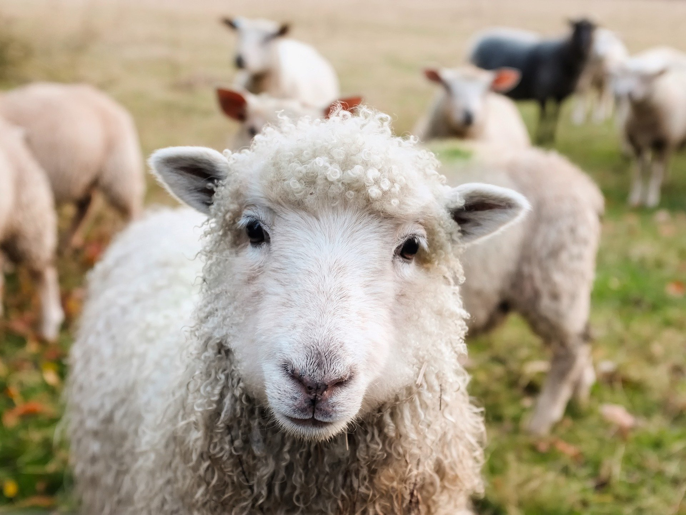
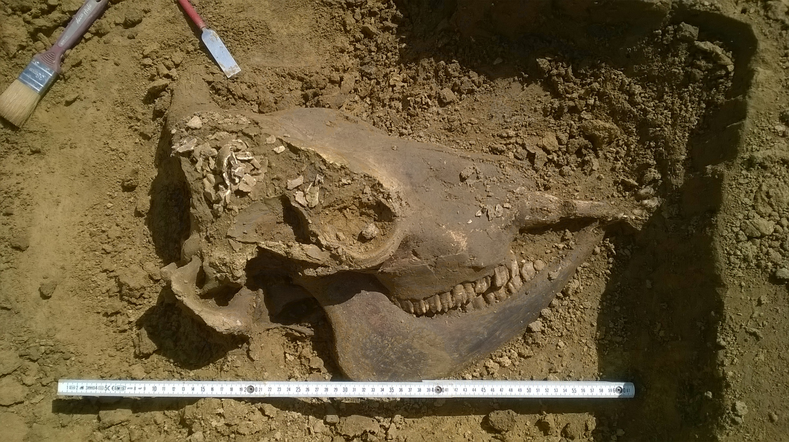

Die wechselseitige Beziehung von Bibliotheken auf der einen und Tieren diverser Couleur auf der anderen Seite ist von gegenseitigem Geben und Nehmen geprägt. Das Spektrum reicht von den bei Lesern und Nutzern beliebten Vorlesehunden und Bibliothekskatzen bis hin zu Schädlingen wie Bücherwürmern und Kleinnagern.1 Es gibt also zum einen absichtliche und gewollt herbeigeführte, zum anderen unabsichtliche und eher ungewollte Begegnungen. Letztere enden zudem nicht selten negativ für alle Beteiligten, nicht zuletzt auch für unsere Buchbestände.
Für einige der wertvollsten Werke jedoch, die man in unseren Beständen bewundern kann – Bücher, deren Beschreibstoff Pergament
ist – waren es aber die Tiere, die hier Leib und Leben lassen mussten.
In folgendem Aufsatz soll es zum einen um Pergament gehen, Herkunft, Geschichte und Herstellung, aber zum anderen vor allem auch um die Tiere, die, zwangsläufig, eine zentrale Rolle spielen. Der Schwerpunkt soll hier bei Schafen und Rindern liegen.
Pergament – was ist das eigentlich?
Pergament ist ein Beschreibstoff, der aus der Haut von Wirbeltieren hergestellt wird. Definiert wird es dabei als enthaarte, spanngetrocknete […] nicht gegerbte Haut
.2 Zumeist werden beziehungsweise wurden die Häute von Rindern, Kälbern, Schafen, Ziegen oder Schweinen dafür verwendet. Aber auch Häute anderer Tiere, wie die von Rehen und Hirschen, dienten als Rohstoff.3
Die rohen Häute werden zunächst etwa zwei Tage im Wasserbad gereinigt (Weiche). Danach folgt das sogenannte Äschern, bei dem die Häute über längere Zeit in einer Kalklauge gebeizt werden. Anschließend werden die letzten Reste von Fettgewebe, Fleischresten und Haaren auf dem Gerberbaum, einem Holzbock, abgeschabt, bis nur noch die reine weiße Lederhaut zurückbleibt. Nach weiterem Waschen wird die Haut in einen zumeist hölzernen Rahmen gespannt. Durch das Trocknen zieht sich die Haut dabei stark zusammen, und kann reißen. Die Collagen-Fasern ordnen sich jetzt neu an, und das Material wird opak, zudem wird das Blatt fest und flexibel. Vor dem Beschreiben müssen diese Häute jedoch noch geschliffen und auf die gewünschte Stärke geschabt werden, wobei es Unterschiede zwischen Haut- oder Narbenseite gibt. Um den Mal- oder Schreibgrund feinsamtig und fettfrei zu bekommen müssen noch weitere Arbeitsschritte durchgeführt werden, mit deren Feinheiten oft die Schreiber selbst betraut waren.4
Chemisch wird die Struktur von Pergament vor allem durch Collagen (auch Kollagen) geprägt, einem langkettigen Skleroprotein, das lange Fasern aufweist und daraus eine Art dreidimensionales Netz oder Geflecht bildet. Dieses stützt den Körper, den es umgibt, schützt ihn vor der Umwelt und dient damit auch als Grundlage der späteren Materialeigenschaften des daraus gewonnenen Pergaments.5
Je nach verwendeter Tierart, dem Alter, Geschlecht und individuellen Eigenheiten variiert das Pergament in Qualität, Farbe und Dicke. Das feine, papierdünne Jungfernpergament, charta virginea, wird von neugeborenen Lämmern gewonnen.6
Pergament – gestern und heute
Zu den frühesten pergamentartigen Funden gehört eine Schriftrolle aus dem Kairo des 2. Jahrtausend v. Chr. Der antiken Überlieferung nach wurde Pergament im 2. Jahrhundert v. Chr. in der kleinasiatischen Stadt Pergamon erfunden, wo unter König Eumenes II. (197–159 v. Chr.) die Herstellung verfeinert wurde. Der heutige Name Pergament
stammt von den antiken Bezeichnungen ab, also membrana pergamena, pergamenum oder charta pergamena. In griechischen Quellen wird es διϕτέρα7 genannt. Einige Jahrhunderte parallel zum Papyrus verwendet, verhalf die immer größere Verbreitung der Codex-Buchform dem Pergament zum Aufstieg, denn das Papyrus war dafür weniger gut geeignet. Ein weiterer Vorteil des Pergaments ist, dass es prinzipiell überall dort hergestellt werden kann, wo es geeignete Tiere gibt. Im Gegensatz dazu blieb Ägypten primärer Herstellungsort für Papyrus. Zudem ist Pergament dauerhafter und kann auch beidseitig beschrieben werden, und so deutlich mehr Inhalt bei gleichem Platzbedarf fassen. All dies macht es für die Codex-Form besonders gut geeignet.8
Ab dem 4. Jahrhundert löste das Pergament rasch den Papyrus ab, wobei die Möglichkeit es lokal herstellen zu können mit der Tatsache einherging, dass Importe von Papyrus aus Ägypten immer schwieriger zu bekommen waren. Spätestens ab dem 8. Jahrhundert dominierte Pergament das europäische Schriftwesen. Die Buchproduktion war dabei anfangs eng mit der Pergamentherstellung verknüpft, beides geschah in der Regel am gleichen Ort. Pergament wurde schwerpunktmäßig für den eigenen Bedarf in den Klöstern produziert und dort auch gleich zu Codices weiterverarbeitet. Hinzu kommt Pergament für Urkunden. Die Prunkstücke vieler Bibliotheken zeugen auch heute noch von dieser Zeit. Ab dem 13. Jahrhundert wurde der Beschreibstoff auch von Laien, berufsmäßigen Pergamentern, hergestellt.9
Ab dem 13. Jahrhundert wurde das Pergament langsam von einem ursprünglich chinesischen Beschreibstoff verdrängt, dem Papier. Bereits im 12. Jahrhundert wurden die ersten Produktionsstätten im damals arabischen Spanien errichtet, 1390 schließlich die erste deutsche Papiermühle in Nürnberg. Die zunehmende Verbreitung des Papiers hing auch mit dem aufkommenden Buchdruck ab den 1440er Jahren zusammen. Das deutlich teurere Pergament konnte den stark ansteigenden Bedarf der überall entstehenden Druckereien nicht decken. Zudem war Papier durch seine Materialeigenschaften für den Druck besser geeignet.10
Pergament spielt heutzutage als Beschreibmaterial nur noch eine sehr untergeordnete Rolle, etwa für Urkunden oder Reparaturen von Handschriften. Dank der Allgegenwart des Papiers und dem aktuellen Trend zu E-Publikationen wurde es zu einem hochspezialisierten Nischenprodukt.11
Was auch in seiner Hochzeit das Pergament teuer, aufwändig und selten machte, war der immense Aufwand, der für nur einen Codex betrieben werden musste. Denn die Herstellung des Pergaments war nur der erste Schritt. Die Seiten mussten ja noch beschrieben und illustriert, das ganze Buch mit einem Einband12 versehen werden.13
Immens war auch der Bedarf an Tieren. Für einen Codex mit 100 Doppelblättern wurden etwa 25 Häute gebraucht, also 25 Kälber. Einer mit 300 Blättern, Format etwa DIN A3, benötigt etwa 75 Kälber, wobei folglich jedes Kalb zwei Doppelblätter lieferte. Für eine große Bibel muss man mit 600 Schafen rechnen. Wenn man für die etwa 3.300 Klöster in Deutschland des 13. Jahrhunderts14 jeweils nur mit 50 Büchern rechnet, kommt man schnell auf sehr große Zahlen: 15
Codex für 50 Kälber x 50 = 2.500 Kälber pro Kloster
2.500 Kälber x 3.300 Klöster = 8.250.000 Kälber
Wobei größere Tiere natürlich mehr Seiten liefern als kleine. Dementsprechend schaut die Rechnung für Schafe so aus:
Bibel für 600 Schafe x 50 = 30.000 Schafe pro Kloster
30.000 Schafe x 3.300 Klöster = 99.000.000 Schafe
Große Bibliotheken, wie Kloster Eberbach oder St. Gallen, kommen alleine schon auf 1.000 (50.000 Kälber / 600.000 Schafe) beziehungsweise 2.100 Codices (105.000 Kälber / 1.260.000 Schafe). Für Kloster Eberbach sind für das Jahr 1500 mehr als 2.000 Schafe nachgewiesen, wobei deren Häute, neben Wolle und Fleisch, nur ein Teil ihres Nutzens darstellen.16
Tatsächlich gibt es auch Hochrechnungen, wie viele Handschriften ursprünglich hergestellt wurden, also inklusive derjenigen, die bis heute verloren gegangen sind. Für Deutschland in der Zeit vom 8. bis 15. Jahrhundert geht man von 1,4 bis 1,8 Millionen Büchern aus. Folglich ergibt sich:17
Codex für 50 Kälber x 1.400.000 = 70.000.000 Kälber
oder
Bibel für 600 Schafe x 1.400.000 = 840.000.000 Schafe
Diese Rechnungen sind natürlich reine Zahlenspielereien, und weder belastbar noch repräsentativ; sie sollen lediglich einen Anhaltspunkt für die benötigten Tiere geben. Nicht zu vergessen ist, dass Pergament verschiedener Tiere verwendet wurde, und nicht nur, so wie hier angedeutet, singulär von einer Gattung. Auch muss man die gestiegene Bedeutung von Papier vor allem im 15. Jahrhundert berücksichtigen.
Was aber in jedem Fall ersichtlich wird, ist die Tatsache, dass es eine riesige Menge an Tieren war, deren Häute zu Pergament verarbeitet wurden, vor allem, da sich die oben genannten Zahlen alleine auf Deutschland beschränken.
Und dies führt uns zum zweiten Teil: den Tieren.
Tiere – welche sind das überhaupt, und was macht man mit ihnen?
Neben dem Ackerbau, und in geringerem Maße der Jagd, stellt die Nutz- bzw. Haustierhaltung18 eine der wichtigsten Säulen der Nahrungsmittelversorgung dar. Auch im Mittelalter war dies nicht anders.19
Die Häute und die Felle von Tieren stellen einen wichtigen, heute oft umstrittenen Rohstoff dar. Leder wird und wurde daraus gegerbt, aber auch unser Pergament. Meist werden die Tiere aber wegen ihrer Arbeitskraft, ihrem Fleisch, ihrer Milch oder ihrer Wolle gehalten, und die Häute fallen, wie Innereien, Hörner oder Haare, als Nebenprodukt
bei der Schlachtung ab.20
Der Versuch sich der Haustierhaltung im deutschen Mittelalter zu nähern führt fast zwangsläufig auch zu einer Betrachtung der archäologischen Fundsituation. Dabei ist zwangsläufig von einem unvollständigen, von der jeweiligen Erhaltungssituation abhängigen und generell einem nicht unbedingt immer repräsentativen, da vom Zufall bestimmten Bild auszugehen.21
Im Folgenden sollen exemplarisch die beiden wichtigsten Tierarten für die Pergamentherstellung, Schaf und Rind, sowie die Ziege vorgestellt werden.
Schafe und Ziegen
Das Schaf (ovis) gehört zu den ältesten Nutztieren, und wurde bereits im 9. Jahrhundert v. Chr. in Südwestasien domestiziert. Schafe sind relativ genügsam, haben eine hohe Reproduktionsrate und bieten ein breites Nutzungsspektrum: Fleisch, Milch, Wolle und Fell beziehungsweise Haut für unser Pergament. Die fast wichtigste Nutzung war jedoch die Wolle, die von Tuchwebern zu Stoff verarbeitet wurde, wobei ein mittelalterlicher Handwerker etwa 40–50 Schafe abdecken konnte. Der Wollstoff selbst wurde dann, neben dem lokalen Eigenverbrauch, auch zum europäischen Handelsgut.22
Es sind einige phänotypisch unterschiedliche Rassen bekannt, eine lange postulierte Urrasse
kann im Fundmaterial aber nicht ausgemacht werden. Die teils erheblichen regionalen Unterschiede umfassen etwa Größe, wobei norddeutsche Tiere bis zu 10 cm größer waren als süddeutsche, und Körperbau, norddeutsche waren schlanker, süddeutsche eher gedrungener. Zudem scheinen hornlose Tiere verbreiteter gewesen zu sein als gehörnte. Grundlegende züchterische Maßnahmen zur gezielten Ertragssteigerung von Wolle scheinen aber nicht durchgeführt worden zu sein, auch wenn edlere, ertragreichere Tiere sehr begehrt waren und auch gehandelt wurden (beziehungsweise eben dieser Handel untersagt wurde). Heute ist die Bedeutung der Wolle aufgrund der Durchsetzung synthetischer Fasern stark zurückgegangen. Stattdessen werden die Tiere vornehmlich wegen ihres Fleisches gezüchtet.23
Die Ziege (capra), die Kuh des kleinen Mannes
24, kann unter sehr kargen Bedingungen gehalten werden und alleine zur Subsistenzversorgung durch Milch und Fleisch beitragen. Sie wurde ebenfalls im 9. Jahrhundert v. Chr. in Mesopotamien vor allem zur Fleischnutzung domestiziert. Im Vergleich zu Schafen stellen Ziegen im gebirgigen Südwesteuropa etwa 30–60 % der Knochenfunde bei den Kleinwiederkäuern, im restlichen Europa nur 10 bis 20 %.25
Nutzung fanden zudem die Hörner und, von speziellen Wollrassen wie der heutigen Angoraziege, auch eben die Wolle, wenn auch das Hauptaugenmerk nach wie vor auf Milch und Fleisch lag. Für die Pergamentherstellung wurden Schafe und Ziegen während des frühen und hohen Mittelalters vor allem in Südeuropa herangezogen.26
Laut der Ernährungs- und Landwirtschaftsorganisation der Vereinten Nationen (FAO) lebten im Jahr 2017 weltweit fast 1,5 Milliarden Schafe und etwa 1 Milliarde Ziegen. In Deutschland alleine waren es 1,8 Millionen beziehungsweise 100.000 Tiere, von denen circa 1 Million beziehungsweise 20.000 geschlachtet wurden.27
 Abbildung 1: Schafe gehörten zu den wichtigsten Pegamentlieferanten. Dieses Bild zeigt jedoch eine rezente Rasse. Foto: Pixabay
Rinder
Die heutigen Hausrinder (bos) stammen alle vom heute ausgestorbenen Auerochsen (Bos primigenius) ab. Erste sichere Funde von domestizierten Tieren sind aus dem 7. bis 6. Jahrhundert v. Chr. aus dem griechischen Thessalien überliefert. Die wichtigsten Nutzungen waren als Fleisch- und Milchlieferant und als Zugtier von Pflug oder Wagen.28
In römischer Zeit wurden relativ große, kräftige und langgestreckte Tiere gehalten, was auch dafür gesorgt hat, dass noch im Mittelalter auf ehemals römischem Gebiet am Niederrhein und in Süddeutschland große Tiere lebten. Generell jedoch ist ein Trend zu kleineren, schlankeren und lokal deutlich unterschiedlichen Tieren zu erkennen, wobei ab dem Spätmittelalter wieder eine Größenzunahme zu erkennen ist.29
Nicht zuletzt wegen seiner Rolle als Zugtier blieb das Rind im Mittelalter das wirtschaftlich vielleicht wichtigste Tier. Im frühen Mittelalter wurde es rein zahlenmäßig von Schweinen abgelöst, die fast ausschließlich zur Fleischerzeugung dienten. Dieser Trend änderte sich aber ab dem hohen Mittelalter wieder. Für die Pergamentherstellung wurden Rinder beziehungsweise ihre Kälber während des frühen und hohen Mittelalters vor allem in Nordeuropa herangezogen.30
Laut der Ernährungs- und Landwirtschaftsorganisation der Vereinten Nationen (FAO) lebten im Jahr 2017 weltweit fast 1,5 Milliarden Rinder. In Deutschland alleine waren es 12,3 Millionen Tiere, von denen circa 3,5 Millionen geschlachtet wurden.31
 Abbildung 2: Vermutlich römerzeitlicher Rinderschädel auf einer archäologischen Ausgrabung aus dem Jahr 2016. Foto: M. Becht
Ausblick, oder: Tiere und Pergament heute
Natürlich gehorcht die heutige Haustierhaltung ganz anderen Regeln und Gesetzmäßigkeiten, als die vergangener Epochen, nicht zuletzt was das Schlachtverhalten anbelangt. Auch stark gewandelt ist die zeitgenössische Bewertung, was moralische Aspekte anbelangt.
Im Zuge der zunehmenden Industrialisierung der Tierhaltung nach dem Zweiten Weltkrieg entwickelte sich auch eine Gegenbewegung, die ab den 1960er Jahren das Tierwohl in den Fokus nahm. Heute sind Proteste gegen Massentierhaltung beziehungsweise gegen die Bedingungen dieser Massentierhaltung an der Tagesordnung. Auch das Konzept der Nachhaltigkeit ist hier von Bedeutung.32
Dem gemeinen Bibliothekar werden wohl weder Schafe noch Rinder tagtäglich über den Weg laufen. Falls doch, so sollte man darauf achten, Rinder nicht zu bedrängen oder zu lange anzustarren. 2010 kamen alleine in Deutschland sieben Landwirte durch ihr Vieh ums Leben. Auch in freier Natur sollte man deshalb immer an die Warnung der Landwirtschaftskammer Tirol denken: Eine Alm ist kein Streichelzoo!
33
Schafe hingegen sind deutlich friedfertiger, man sollte sich hier mehr vor dem Hütehund in Acht nehmen – vor allem, wenn man selbst einen Hund mit sich führt. Weder sollte man eine Herde durchqueren, noch mit dem Auto hupen, sondern sich stattdessen geduldig und respektvoll verhalten.34
Im bibliothekarischen Berufsalltag werden es vor allem die Kolleginnen und Kollegen vom Alten Buch sein, die sich mit Tieren in Pergamentform auseinandersetzen. Für Tierwohl ist es hier zu spät, und auch die Haltungsbedingungen gehorchen ganz anderen Regeln.
Literatur
Benecke 1994a
Norbert Benecke: Archäozoologische Studien zur Entwicklung der Haustierhaltung in Mitteleuropa und Südskandinavien von den Anfängen bis zum ausgehenden Mittelalter, Schriften zur Ur- und Frühgeschichte 46, Berlin 1994 https://doi.org/10.1515/9783050069456 (15.07.2020).
Benecke 1994b
Norbert Benecke: Der Mensch und seine Haustiere, Berlin 1994.
Bischoff 1986
Bernhard Bischoff: Paläographie des römischen Altertums und des abendländischen Mittelalters, Berlin ²1986.
Buringh 2011
Eltja Buringh: Medieval Manuscript Production in the Latin West, Leiden 2011.
Corbach 2003
Almuth Corbach: Von der Haut zur Codexform – Metamorphose eines Organs, in: Ulrike Zeuch (Hrsg.): Verborgen im Buch, verborgen im Körper, Wolfenbüttel 2003, S. 13–45.
Doll 2003
Monika Doll: Haustierhaltung und Schlachtsitten des Mittelalters und der Neuzeit, Internationale Archäologie 78, Rahden 2003.
Eberbach 2016
Pressemitteilung der Stiftung Kloster Eberbach: Klösterliche Schafhaltung im Kloster Eberbach. Stiftung veranschaulicht grundlegenden Bewirtschaftungsansatz der Zisterzienser. Erfolgreiche Kooperation mit Kiedricher Schafzüchter, Eberbach 2016 https://kloster-eberbach.de/fileadmin/media/stiftung/Pressemitteilungen/20160322_PM_StiftungKlosterEberbach_Kl%C3%B6sterliche-Schafhaltung.pdf (14.07.2020).
FAO 2019
Food and Agricultural Organization of the United Nations: World Food and Agriculture – Statistical pocketbook 2019, Rom 2019 http://www.fao.org/3/ca6463en/CA6463EN.pdf (22.07.2020).
Haidlinger 2016
Alois Haidlinger: Beschreibstoffe, in: Christine Beier (Hrsg.): Geschichte der Buchkultur, Band 5/1, Graz 2016, S. 17–38.
Henning 1994
Friedrich-Wilhelm Henning: Deutsche Agrargeschichte des Mittelalters. 9. bis 15. Jahrhundert, Stuttgart 1994.
Hilz 2019
Helmut Hilz: Buchgeschichte. Eine Einführung, Berlin 2019.
Jakobi-Mirwald 2004
Christine Jakobi-Mirwald: Das mittelalterliche Buch, Stuttgart 2004.
Foerster 1981
Hans Foerster: Abriss der lateinischen Paläographie, Stuttgart ²1981.
Fuchs – Meinert – Schrempf 2001
Robert Fuchs, Christiane Meinert, Johannes Schrempf: Pergament. Geschichte – Material – Konservierung – Restaurierung, München 2001.
Levin 2018
Rachel Levin: Kühe anstarren verboten!, München 2018.
Rimkus 2015
Marco Rimkus: Welternährung, Nutztierschutz und Lebensmittelsicherheit, Berlin 2015.
Sambraus 1996
Hans Hinrich Sambraus: Atlas der Nutztierrassen, Stuttgart 51996.
Santifaller 1953
Leo Santifaller: Beiträge zur Geschichte der Beschreibstoffe im Mittelalter, Graz und Köln 1953.
Statista 2020a
Webseite der Firma Statista, Seite Anzahl der gewerblich geschlachteten Tiere (ohne Geflügel) in Deutschland nach Tierarten in den Jahren 1993 bis 2019
https://de.statista.com/statistik/daten/studie/77515/umfrage/gewerblich-geschlachtete-tiere-seit-2009/ (05.08.2020)
Statista 2020b
Webseite der Firma Statista, Seite Bestandsentwicklung an Nutztieren in Deutschland im Verlauf der Jahre 1900 bis 2018
https://de.statista.com/statistik/daten/studie/659045/umfrage/nutztierbestand-in-deutschland/ (05.08.2020)
St. Gallen 2020
Webseite der Stiftsbibliothek St. Gallen, Seite Handschriften
https://www.stiftsbezirk.ch/de/stiftsbibliothek/handschriften/ (15.07.2020).
Visscher 1991
J. Visscher: Looking back on a Lifetime in Parchmentmaking at William Cowley, in: Peter Rück (Hrsg.): Pergament. Geschichte, Struktur, Restaurierung, Herstellung, Sigmaringen 1991, S. 341–358.
Hier kann der interessierte Leser auf den Blog des Fachbereichs für Informations- und Bibliothekswesen in München, www.aubib.de, verwiesen werden, auf dem eine gezählte Artikelserie zum Thema
Bibliotheken und Tiere
veröffentlicht wird.↩︎Fuchs – Meinert – Schrempf 2001, S. 36.↩︎
Fuchs – Meinert – Schrempf 2001, S. 36, 40; Corbach 2003, S. 15.↩︎
Fuchs – Meinert – Schrempf 2001, S. 36, 40–42, 49–51, 62; Foerster 1981, S. 55.; Corbach 2003, S. 18–21.↩︎
Fuchs – Meinert – Schrempf 2001, S. 9, 15; Corbach 2003, S. 15.↩︎
Fuchs – Meinert – Schrempf 2001, S. 54-55, widerspricht hier der in der Literatur (zum Beispiel Bischoff 1986, S. 24–25) auch zu lesenden Theorie, das Jungfernpergament entstünde aus ungeborenen Tieren; Fuchs – Meinert – Schrempf 2001, S. 18–30, 54–55; Corbach 2003, S. 16–17; Foerster 1981, S. 55; Bischoff 1986, S. 24–25.↩︎
Umschrift: diphtera.↩︎
Santifaller 1953, S. 77–79; Hilz 2019, S. 8–9; Foerster 1981, S. 45, 48, 53–54, Corbach 2003, S. 13–14; Jakobi-Mirwald 2004, S. 119.↩︎
Hier sei beispielhaft das Brevarium Alarici (Clm 22501) in der Bayerischen Staatsbibliothek genannt.; Fuchs – Meinert – Schrempf 2001, S. 9, 32–33, 61–62; Hilz 2019, S. 10–11; Foerster 1981, S. 53–54; Corbach 2003, S. 14, 24; Haidinger 2016, S. 20–22.↩︎
Fuchs – Meinert – Schrempf 2001, S. 9, 34; Hilz 2019, S. 28, 43; Foerster 1981, S. 27–28; Corbach 2003, S. 14; Haidinger 2016, S. 22–23.↩︎
Visscher 1992, S. 344. Im bibliothekarischen Kontext denkt man hier auch an Fragen der Bestandserhaltung, der Lagerung und der Restaurierung.↩︎
Genauer hierzu: Alois Haidinger: Der gotische Bucheinband, in: Christine Beier (Hrsg.): Geschichte der Buchkultur, Band 5/1, Graz 2016, S. 39–62.↩︎
Hilz 2019, S. 10–15; Corbach 2003, S. 24–25; Jakobi-Mirwald 2004, S. 132–148.↩︎
Buringh 2011, Tabelle 2.14 S. 90.↩︎
Haidlinger 2016, S. 21; Jakobi-Mirwald 2004, S. 118; Eberbach 2016, S. 2.↩︎
Eberbach 2020, S. 2; St. Gallen 2020.↩︎
Buringh 2011, S. 264.↩︎
In zoologischer Sicht geht der Begriff
Haustier
über Hund und Katze hinaus, und meint auch Nutztiere, wie Rind und Schaf, in Abgrenzung zu Wildtieren, wie Rehen und Hirschen (Benecke 1994a, S. 20).↩︎Benecke 1994a, S. 189.↩︎
Doll 2003, S. 162–165.↩︎
Benecke 1994a, S. 182–183.↩︎
Benecke 1994a, S. 122–123, 12–127, 228–229; Henning 1994, S. 233–234; Sambraus 1996, S. 102–103.↩︎
Henning 1994, S. 233–234, 236, Benecke 1994a, S. 236; Benecke 1994b, S. 220–222.↩︎
Benecke 1994b, S. 238.↩︎
Benecke 1994b, S. 238–245; Sambraus 1996, S. 163–164.↩︎
Benecke 1994b, S. 246–247; Sambraus 1996, S. 163–164; Doll 2003, S. 164; Hilz 2019, S. 14.↩︎
FAO 2019, Tabelle 6 S. 30; Statista 2020a; Statista 2020b.↩︎
Benecke 1994a, S. 208; Benecke 1994b, S. 260–261, 264–265, 272–274; Sambraus 1996, S. 29.↩︎
Benecke 1994a, S. 216–218; Benecke 1994b, S. 274–276.↩︎
Benecke 1994a, S. 195–196, 202, 207–208; Doll 2003, S. 164; Hilz 2019, S. 14.↩︎
FAO 2019, Tabelle 6 S. 30; Statista 2020a; Statista 2020b.↩︎
Rimkus 2015, S. 43, 47.↩︎
Levin 2018, S. 76–77.↩︎
Levin 2018, S. 102–103.↩︎
Michael Becht: Magister in Klassischer Archäologie, Alte Geschichte und Kunstgeschichte (2012), danach mehrere Jahre auf archäologischen Grabungen hauptsächlich in Bayern tätig, zuletzt als Wissenschaftlicher Grabungsleiter (bis 2019). Seit 2019 Studium Bibliotheks- und Informationsmanagement an der Hochschule für den öffentlichen Dienst in Bayern; schreibt aktiv für den Blog auf aubib.de.